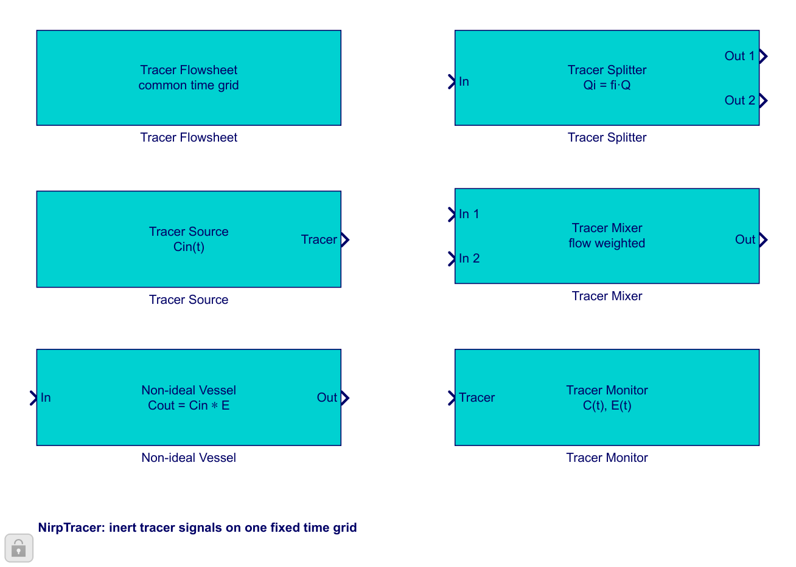

Getting started
Open the library, an example, or a blank diagram and understand its tracer-only scope.
Open guideBuild a linear network with constant volumetric flow and an inert tracer. The diagram transforms the inlet signal through vessels in series or parallel, carries the exact network RTD beside it, and can send that RTD to Tab 1.
Choose a constant flow, an inlet tracer signal, and a time grid long enough to include the network tail. This tool represents a linear series-and-parallel vessel network and does not use process Streams.

Open the library, an example, or a blank diagram and understand its tracer-only scope.
Open guideSet the common time step, final time, and display unit.
Open guideEnter constant flow and define a piecewise function or tabulated inlet signal.
Open guideSelect an RTD model, enter RTD data, or load the RTD from an app session.
Open guideCreate parallel paths with flow fractions that add to one.
Open guideRecombine branches by volumetric flow and preserve a valid RTD when possible.
Open guideRead recovery, moments, equivalent tanks, clipping, and the accumulated network RTD.
Open guideFollow two CSTRs, a PFR/CSTR parallel network, and the former SEC01 exercise.
Open guide| Symptom | What to do |
|---|---|
| A process block is connected to a cyan tracer block | Keep the tracer network separate; the signal contracts are intentionally different. |
| The response tail is cut | Increase tfinal in Tracer Flowsheet. |
| The network RTD cannot be transferred | Use one common source and complete every upstream vessel path. |